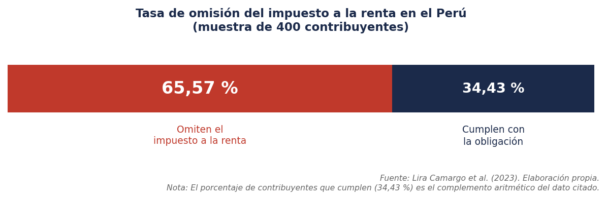

La evasión tributaria genera un impacto directo y cuantificable en la disminución de la recaudación fiscal en el Perú.

Este alto nivel de incumplimiento responde a causas institucionales concretas: la deficiente función fiscalizadora de la SUNAT facilita la omisión sistemática, mientras que la discrecionalidad en la administración tributaria reduce la captación del erario.
En definitiva, la omisión tributaria no representa solo una pérdida de ingresos: deteriora la capacidad del Estado para atender las necesidades de la población y agrava las brechas de inversión pública y social.